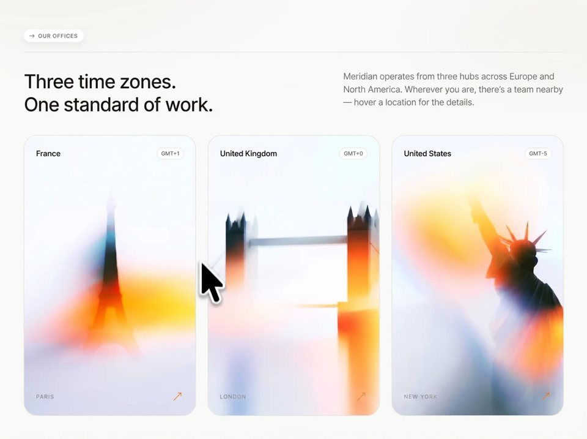

Global Hubs
Agencyagencyyilai-ai 公开页面
收录时间：2026-08-20正文：12,052 字符

本地预览图 · jpeg
完整提示词
**Recreate this exact single-page “Meridian — Our Offices” section as a static HTML/CSS/JS site (`index.html`, `styles.css`, `main.js`). Match every layout, type, color, asset URL, glass treatment, and animation below. Do not invent extra sections, nav, footer, or branding.**
## Page identity
- Title: `Meridian — Our Offices`
- Language: `en`
- Single full-viewport page (no scroll on desktop). `html, body { height: 100%; overflow: hidden; }`
- On viewports `max-width: 960px`, allow scroll (`overflow: auto`), page becomes `height: auto; min-height: 100dvh`.
## Fonts (exact Google Fonts URL)
Load:
```
https://fonts.googleapis.com/css2?family=IBM+Plex+Mono:wght@400;500&family=Inter:wght@400;500;600;700&display=swap
```
Preconnect `https://fonts.googleapis.com` and `https://fonts.gstatic.com` (crossorigin).
Stacks:
- Body / UI / headline / copy: `"Inter", "Helvetica Neue", Helvetica, "Segoe UI", sans-serif`
- Mono (hover-panel city name + meta): `"IBM Plex Mono", "SF Mono", "Consolas", monospace`
- Antialiased: `-webkit-font-smoothing: antialiased; -moz-osx-font-smoothing: grayscale`
## Color tokens (exact)
```
--bg: #fafaf8
--text: #111111
--muted: #666666
--muted-soft: #8c8c8c
--pill-bg: #ffffff
--card-gray: #e5e5e5
--line: #e6e6e4
--tz-bg: rgba(255, 255, 255, 0.78)
--accent: #e67e22
--radius: 28px
```
Page background (warm off-white with two faint radial washes):
```
radial-gradient(1100px 480px at 8% -8%, rgba(0,0,0,0.03), transparent 55%),
radial-gradient(800px 380px at 95% 8%, rgba(0,0,0,0.025), transparent 48%),
#fafaf8
```
## Layout (desktop, 3-column office page)
Outer `.offices`: `width 100%`, `height 100vh / 100dvh`, flex column.
Padding tokens:
- `--pad-top: clamp(56px, 7vh, 125px)`
- `--pad-x: clamp(24px, 4.2vw, 75px)`
- `--pad-bottom: 40px`
- `--gap-pill-line: clamp(18px, 2.2vh, 40px)`
- `--gap-line-text: clamp(32px, 4vh, 48px)`
- `--gap-text-cards: clamp(36px, 4.5vh, 64px)`
- `--gap-cards: clamp(18px, 2vw, 35px)`
- `--card-pad: clamp(22px, 2vw, 34px)`
### Top block (top-aligned, not vertically centered)
1. **Eyebrow row** (column, left-aligned):
- White capsule pill: text `OUR OFFICES` (CSS `uppercase`, `letter-spacing: 0.08em`, `font-size: 0.8rem`, `font-weight: 500`, color `#2a2a2a`)
- Pill padding `0.42rem 0.85rem 0.42rem 0.7rem`, `border-radius: 999px`, `box-shadow: 0 4px 14px rgba(0,0,0,0.05)`, gap `0.38rem`
- Left of the label: small right-pointing arrow SVG, 14×10, viewBox `0 0 18 12`, path `M1.5 6h13.5M11.5 2.75 15.5 6l-4 3.25`, stroke currentColor, `stroke-width 1.35`, round caps/joins, no fill
- Full-width 1px hairline `#e6e6e4` under the pill
2. **Header**: 2-column CSS grid
`grid-template-columns: minmax(0, 1fr) minmax(0, 630px)`
gap `clamp(1.25rem, 4vw, 3.75rem)`, items start-aligned.
Left headline (exact copy, line break after first sentence):
**Three time zones.**
**One standard of work.**
Type: Inter 500, `font-size: clamp(2.55rem, 2.65vw + 1.65vh, 4.5rem)`, `line-height: 1.18`, `letter-spacing: -0.03em`, color `#111`, `text-wrap: balance`.
Right copy, `justify-self: end`, max-width `min(630px, 100%)`, Inter 400, `font-size: clamp(1.2rem, 0.7vw + 0.7vh, 1.5rem)`, `line-height: 1.5`, `letter-spacing: -0.01em`, color `#6b6b6b`. Exact copy:
> Meridian operates from three hubs across Europe and North America. Wherever you are, there’s a team nearby — hover a location for the details.
### Cards grid
`flex: 1`, `min-height: 0`, `display: grid`, `grid-template-columns: repeat(3, minmax(0, 1fr))`, gap as `--gap-cards`. Cards stretch to remaining viewport height. Each card `min-height: max(280px, 38vh)`, `cursor: pointer`, `tabindex="0"`, `outline: none`. **Do not lift/translate the card on hover** — only the photo scales.
Card surface: `border-radius: 28px`, `overflow: hidden`, `isolation: isolate`, `border: 1px solid rgba(0,0,0,0.1)`, no box-shadow.
## Exact photo URLs (background-image, cover, center)
Apply as CSS `background-image` on `.office__media.has-photo`. Use these URLs verbatim (Higgs CDN, webp, `w=1280`, `q=85`):
**Paris**
```
https://images.higgs.ai/?default=1&output=webp&url=https%3A%2F%2Fd8j0ntlcm91z4.cloudfront.net%2Fuser_38xzZboKViGWJOttwIXH07lWA1P%2Fhf_20260813_120239_176d1c43-47bb-4034-880e-9abfa55cb46e.png&w=1280&q=85
```
Photo: daytime Paris Haussmann street, cream buildings, café awning, trees, pedestrians.
**London**
```
https://images.higgs.ai/?default=1&output=webp&url=https%3A%2F%2Fd8j0ntlcm91z4.cloudfront.net%2Fuser_38xzZboKViGWJOttwIXH07lWA1P%2Fhf_20260813_120256_cfcb1ed1-6e80-486d-9fed-26ebe5dea114.png&w=1280&q=85
```
Photo: overcast London street, red double-decker bus, black taxi, brick/stone buildings, wet pavement.
**New York**
```
https://images.higgs.ai/?default=1&output=webp&url=https%3A%2F%2Fd8j0ntlcm91z4.cloudfront.net%2Fuser_38xzZboKViGWJOttwIXH07lWA1P%2Fhf_20260813_131320_4b0da7d5-ad06-4d7d-b491-f99d947a524c.png&w=1280&q=85
```
Photo: NYC Financial District canyon, tall beige masonry towers, yellow taxi, American flags, busy sidewalk.
Media layer: absolute inset 0, z-index 0, fallback gray `#e5e5e5`, `filter: brightness(1.06) contrast(0.98)`.
## Card chrome (always visible until hover)
Overlay absolute inset 0, `pointer-events: none`, z-index 2. Padding from `--card-pad`.
**Top row:** country name left, timezone pill right.
- Country: Inter 600, `clamp(1.4rem, 1.7vw + 0.3vh, 1.85rem)`, `letter-spacing: -0.025em`, `line-height: 1`, `#111`
- TZ pill: `rgba(255,255,255,0.78)` fill, `1px solid rgba(0,0,0,0.08)`, `border-radius: 999px`, padding `0.38rem 0.7rem`, color `#555`, Inter 600, `clamp(0.78rem, 0.85vw + 0.15vh, 0.92rem)`, **glass: `backdrop-filter: blur(6px)`** (and `-webkit-`)
**Bottom row:** city left (uppercase tracking), orange northeast arrow right.
- City: Inter 600, `clamp(0.7rem, 0.82vw, 0.8rem)`, `letter-spacing: 0.14em`, `text-transform: uppercase`, color `#9b9b9b`
- Arrow: 1.7rem box, color `#e67e22`, SVG viewBox `0 0 24 24`, path `M5 19 19 5M13 5h6v6`, stroke currentColor, `stroke-width 1.15`, round, no fill. Default `transform: translateY(-1px)`.
On hover/open: bottom row fades `opacity: 0` in `0.3s ease`. Arrow nudges `translate(2px, -3px)` in `0.3s cubic-bezier(0.22, 1, 0.36, 1)`. Photo zooms to `scale(1.04)` in `0.55s cubic-bezier(0.22, 1, 0.36, 1)`.
## Hover glass details panel (critical)
Panel sits absolute left/right/bottom, **height 62%**, min-height 280px, z-index 3, `pointer-events: none`.
### Glass / blur layer (`.office__panel-blur`)
- Absolute inset 0
- Bottom corners: `border-radius: 0 0 calc(28px - 1px) calc(28px - 1px)`
- **No tinted overlay fill** — `background: transparent`
- **Instant (no transition) frosted glass:** `backdrop-filter: blur(30px)` and `-webkit-backdrop-filter: blur(30px)`
- Opacity 0 by default; on hover/open jump to 1 (`transition: none`) so blur appears instantly
- Soft top fade via mask so glass dissolves into the photo:
```
linear-gradient(
to bottom,
transparent 0%,
rgba(0,0,0,0.35) 18%,
rgba(0,0,0,0.85) 38%,
#000 58%,
#000 100%
)
```
Apply as both `mask-image` and `-webkit-mask-image`.
### Panel copy (rises from bottom)
Inner padding `1.35rem var(--card-pad) var(--card-pad)`, transparent background, left-aligned column.
Each item starts `opacity: 0; transform: translateY(22px)` and animates to `opacity: 1; translateY(0)` with:
- opacity `0.42s cubic-bezier(0.22, 1, 0.36, 1)`
- transform `0.48s cubic-bezier(0.22, 1, 0.36, 1)`
- stagger delay `calc(var(--i) * 55ms)` where `--i` is 0, 1, 2, 3 from top to bottom
**Block 0 — city row** (IBM Plex Mono 500, uppercase, `letter-spacing: 0.14em`, `clamp(0.78rem, 0.9vw, 0.88rem)`, color `rgba(0,0,0,0.72)`). Left arrow SVG 16×10, viewBox `0 0 20 12`, path `M1 6h16M13.25 2.5 17.5 6l-4.25 3.5`, stroke 1.35. Padding/margin-bottom `0.95rem`. Divider: `1px solid rgba(255,255,255,0.9)`.
**Block 1 — address**
Primary Inter 600 `clamp(0.92rem, 1.05vw, 1.05rem)`, `letter-spacing: -0.02em`, `rgba(0,0,0,0.8)`
Secondary Inter 400 same size, `rgba(0,0,0,0.5)`, `margin-top: 0.22rem`
Padding/margin-bottom `0.9rem`, same white 90% divider.
**Block 2 — phone + email** (same type styles as address)
**Block 3 — meta** IBM Plex Mono 400, uppercase, `letter-spacing: 0.12em`, `clamp(0.78rem, 0.85vw, 0.85rem)`, `rgba(0,0,0,0.45)`. No divider.
## Exact office content
**Card 1 — Paris** (`data-office="paris"`)
Country: France · TZ: GMT+1 · City: Paris
Panel city: Paris
Address: `12 Rue de l'Université` / `75007 Paris, France`
Phone: `+33 1 44 55 00 12` · Email: `paris@meridian.co`
Meta: `142 People · Est. 2016`
**Card 2 — London** (`data-office="london"`)
Country: United Kingdom · TZ: GMT+0 · City: London
Panel city: London
Address: `1 Butler's Wharf, Shad Thames` / `London SE1 2LP, UK`
Phone: `+44 20 7946 0330` · Email: `london@meridian.co`
Meta: `96 People · Est. 2018`
**Card 3 — New York** (`data-office="new-york"`)
Country: United States · TZ: GMT-5 · City: New York
Panel city: New York
Address: `85 Broad Street, Floor 17` / `New York, NY 10004, USA`
Phone: `+1 212 555 0184` · Email: `newyork@meridian.co`
Meta: `210 People · Est. 2014`
Hover interaction only on `(hover: hover) and (pointer: fine)`. Fine-pointer hover also opens the panel. Click toggles `is-open` (for touch). Clicking an open card adds `is-closed` so CSS hover cannot immediately reopen it; `mouseleave` removes `is-closed`. Clicking another card or the document closes others. Enter/Space on focused card triggers click. Set `aria-expanded` true/false.
## Page-load entrance (staggered, slightly blurred)
On first paint, elements with `.reveal` start invisible. After double `requestAnimationFrame`, add `.is-in`. Respect `prefers-reduced-motion: reduce` (show immediately, no motion). Easing: `cubic-bezier(0.22, 1, 0.36, 1)`. Delay via inline `--d`.
| Element | class | --d | from |
|---|---|---|---|
| Pill | `reveal--pill` | 0.02s | `translateY(-8px) scale(0.96)`, blur 3px, 0.45s opacity |
| Hairline | `reveal--line` | 0.1s | `scaleX(0.18)` origin left, 0.25s opacity + 0.55s scale to 1 |
| Headline | `reveal--title` | 0.16s | `translateX(-18px)`, blur 5px, 0.5s/0.6s |
| Copy | `reveal--copy` | 0.24s | `translate(16px, 8px)`, blur 4px |
| Paris card | `reveal--card-left` | 0.32s | `translate(-14px, 14px) scale(0.985)`, blur 4px |
| London card | `reveal--card-mid` | 0.4s | `translateY(10px) scale(0.99)`, blur 4px |
| NY card | `reveal--card-side` | 0.48s | `translate(14px, 14px) scale(0.985)`, blur 4px |
When a card enters, its photo runs `media-settle` 0.65s: scale 1.04 → 1, delay `var(--d) + 0.04s`. After enter, hover must **not** re-apply card translate/blur — keep `transform: none`.
## Responsive (match these breakpoints)
- **≥1921px:** pad-top 125, pad-x 75, gaps 40/48/64/35, card-pad 34, larger type, cards `min-height: max(360px, 42vh)`
- **≤1680:** slightly smaller headline/copy/country
- **≤1440:** pill 0.72rem; header columns `1.05fr / min(480px, 42vw)`; TZ pill smaller; panel height 68% / min 240px
- **≤1200:** header `1fr / min(400px, 40vw)`
- **≤960:** stack header to 1 column; copy left-aligned max 34rem; cards 1 column, surface `aspect-ratio: 4 / 4.7`; page scrolls
- **≤560:** pad-top 36, pad-x 18, tighter gaps, smaller type
- **max-height 860px and min-width 961px:** compress vertical gaps/type
- **max-height 720px and min-width 961px:** even tighter, panel min-height 210px
## What not to do
- No extra navigation, logo, footer, map, or CTA buttons
- No colored glass overlay (no white/black fill on the blur layer)
- No card lift/shadow on hover
- No serif display font — Inter only for headlines
- Do not replace the three Higgs image URLs
- Do not animate the glass blur in (it must appear instantly); only the text rises with stagger把上面的提示词完整复制到支持长文本的 AI 工具中，再按需要替换品牌名、配色与文案。提示词描述的是整页结构与动效节奏，生成后建议在真实浏览器里检查首屏加载和移动端表现。
来源与版权
该条目来自公开提示词页面，原始出处信息未随页面提供。
提示词文本与预览素材的版权归原作者或原平台所有，本站仅作索引与归档。若你是权利人并希望移除本条内容，请通过联系方式告知。